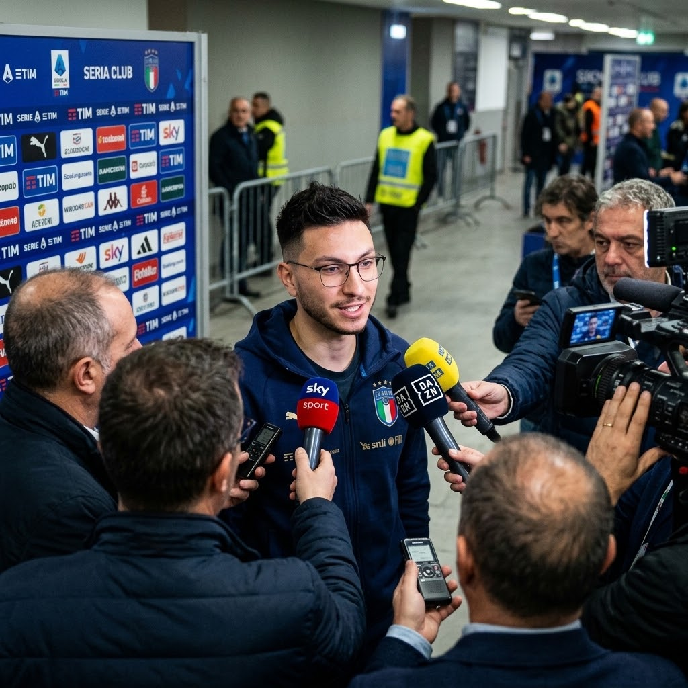
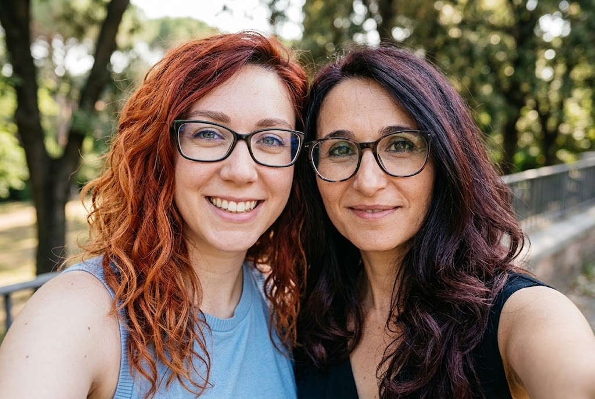

Il cammino del B.I.B.C. nella Farini Champions League sembra ormai in discesa, tanto che all'interno dello spogliatoio la qualificazione alla fase a eliminazione diretta viene data per certa. A confermare questo clima di assoluta — e forse eccessiva — rilassatezza è stato Davide Nobile, roccioso difensore della squadra, durante l'ultima intervista rilasciata ai microfoni di Farini TV.
Alla precisa domanda del giornalista, che gli chiedeva: "Quindi la vostra squadra è già qualificata ai quarti di finale?", Nobile ha risposto con una spavalderia che sta già facendo infiammare i social del torneo. "Sì, tanto ci manca da giocare solo contro la squadra delle ragazze", ha dichiarato il difensore senza mezzi termini. "Quindi siamo tranquillissimi e probabilmente faremo giocare le nostre controfigure".
Una provocazione bella e buona indirizzata al team DUE DI TROPPO, che affronterà il B.I.B.C. nell'ultimo turno. Resta ora da vedere se questa dichiarazione si ritorcerà contro Nobile e compagni, fornendo alle ragazze la motivazione perfetta per cercare un'impresa in campo. L'attesa per il fischio d'inizio è ormai alle stelle.